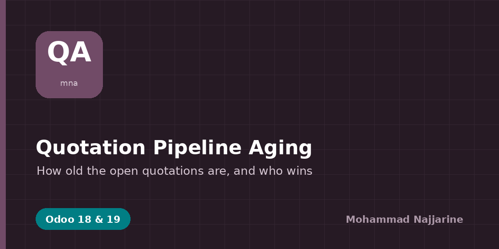
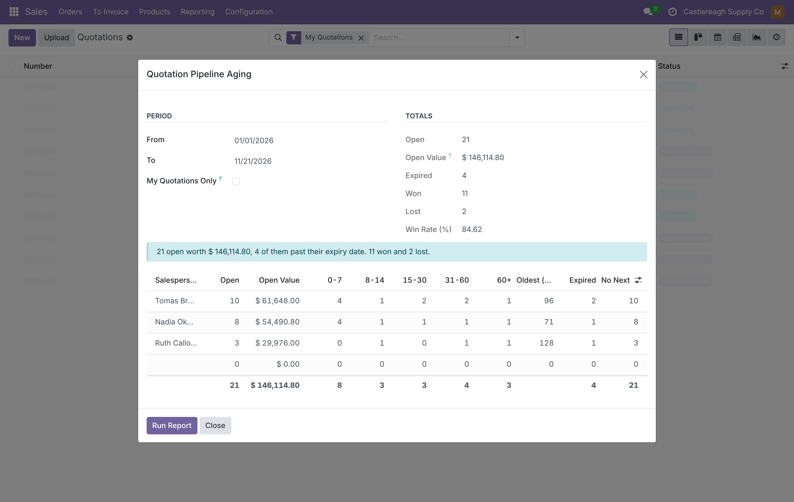
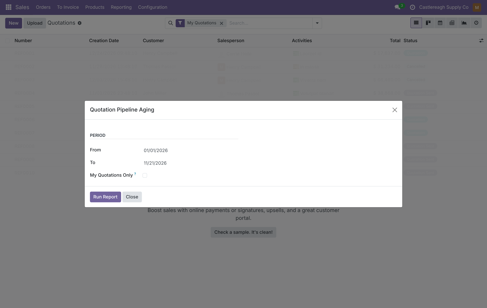

The quotations list in Odoo tells you what is open. It does not tell you how long it has been open, which is the part that decides whether the number is a pipeline or a graveyard.
Twenty one open quotations reads well until you find that four of them are past their own expiry date, every one of them has no next step scheduled against it, and the oldest has been sitting there for ninety six days.
Read only. It adds no fields to your sales orders and changes nothing. Free and open source under LGPL-3.
0 to 7, 8 to 14, 15 to 30, 31 to 60 and over 60 days, with the age of the oldest one still open.
Untaxed, in the company's own currency, converted at each order's own date.
Quotations past their own validity date that nobody has closed or renewed.
Open quotations with no activity scheduled against them, which is how a deal goes quiet.
Over the same period, per salesperson, so the figure is comparable across the team.
Quotations with no salesperson get their own row, because those are the ones most likely to rot.
Every row opens the quotations behind it, so a number that looks wrong can be checked rather than argued about.


A pipeline figure that adds a dollar order to a euro one without converting is a number nobody can use, so each order is converted at its own date.
A pipeline is compared against a revenue target, and tax is not revenue. Including it would overstate every figure on the report by the tax rate.
The bucket counts always total the open count: nothing falls between two boundaries and nothing is counted twice. The tests assert it.
| Odoo | 18.0 and 19.0, Community or Enterprise |
| Depends on | Sales only, with no Enterprise dependency |
| Licence | LGPL-3, free |
| Tested | 20 automated tests on both 18.0 and 19.0, including every bucket boundary and a currency conversion at a known rate |
Written and maintained by Mohammad Najjarine, Odoo consultant. Questions, bug reports and customisation requests are answered.
Message me on WhatsApp Code and issues on GitHub
Phone and WhatsApp +961 71 835279